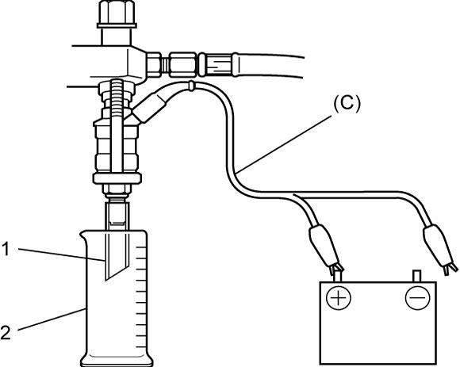

1G
| Fuel Injector Inspection |
Before performing the following procedure, observe Precautions for Fuel System Service:M16A.
1)Remove fuel injector. 
2)Set special tools as follows.
a)Fit washer (1) (inside diameter 13.5 – 14.5 mm (0.532 – 0.570 in.)) to fuel injector (2), and then install injector to special tool (A).
b)Connect special tool (C) to fuel injector.
c)Install special tool (B) to special tool (A).
d)Connect fuel feed hose to special tool (A).

 "Expand image")
3)Install suitable vinyl tube (1) onto injector nozzle to prevent fuel from splashing out during injection.
4)Put graduated cylinder (2) under fuel injector.
5)Connect one of terminal of special tool (C) to battery positive (+) terminal.
 WARNING:
WARNING:
There is an increased risk of personal injury and fire if the following procedure is performed without taking proper precautions.
Put fuel injectors as far away from the battery as possible when connecting / disconnecting the test lead to / from the battery.

 "Expand image")
6)Operate fuel pump and apply fuel pressure to fuel injector as follows:
Using SUZUKI scan tool:
Using SUZUKI scan tool:
a)Connect scan tool to DLC (1) with ignition “OFF”.
b)Set ignition “ON”, clear DTC and select “Active Test” mode on scan tool.
Without using SUZUKI scan tool:

 "Expand image")
a)Remove fuel pump relay from individual circuit fuse box No.1.
b)Connect two terminals of relay connector using service wire (1) as shown in figure.
NOTICE:
If the service wire is connected between the wrong terminals, the ECM, wire harness, etc. may be damaged.
Connect the service wire to the correct terminals.
c)Set ignition “ON”.
 "Expand image")
7)Apply battery voltage to fuel injector for 15 sec. and measure injected fuel volume with graduated cylinder. Test each fuel injector two or three times. If injected volume is out of reference value greatly, replace fuel injector.
Reference injected fuel volume
Approx. 57 cm3/15 sec. (1.93/2.01 US/Imp pt/15 sec.)
 "Expand image")
8)Check fuel leakage from injector nozzle. Do not operate fuel injector for this check (but fuel pump should be at work). If fuel leaks (1) more than the following specification, replace fuel injector.
Fuel leakage
Less than 1 drop/min.
 "Expand image")
9)Release fuel pressure in fuel feed line according to steps below and remove fuel injector from special tools.
a)Stop operation of fuel pump.
b)Put graduated cylinder under fuel injector.
c)Apply battery voltage to fuel injector until no fuel is injected from fuel injector.
10)Carry out Step 2) – 9) on each fuel injector to obtain 4 readings.
11)After checking, remove special tools from fuel injector and fuel feed pipe.
12)Install fuel injectors to cylinder head.
13)Connect fuel feed hose to delivery pipe.
14)Check for fuel leakage.